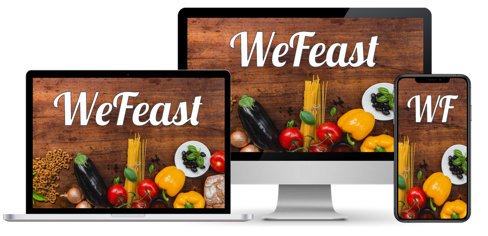

<main>
    <section class="presentation">
        <div class="introduction">
            <div class="intro-text">
                <div class="cover">
                    <h1>Find your next favorite recipe. </h1>
                    <p>
                        <strong>WeFeast</strong> is a free recipe sharing platform.
                        Discover over +1,000 recipes from around the world, or add your own recipes to keep us growing!
                    </p>
                    <ul class="feature_list">
                        <li>
                            Explore +1,000 recipes and growing!
                        </li>
                        <li>
                            Lightning fast, ad-free user experience
                        </li>
                        <li>
                            Fully responsive, mobile-friendly
                        </li>


                        <li>
                            Always <strong>free</strong>!
                        </li>

                    </ul>
                    <div style="display:flex;justify-content:center;padding-bottom:35px;">
                        <button class="button" (click)="goToRegister()"><span>Get Started</span></button>

                    </div>

                </div>


            </div>


        </div>
        <div class="cover">
            
        </div>
    </section>

</main>


<!-- End of Footer Section -->
<!--<h1>Hello, world!</h1>
<p>Welcome to your new single-page application, built with:</p>
<ul>
    <li><a href='https://get.asp.net/'>ASP.NET Core</a> and <a href='https://msdn.microsoft.com/en-us/library/67ef8sbd.aspx'>C#</a> for cross-platform server-side code</li>
    <li><a href='https://angular.io/'>Angular</a> and <a href='http://www.typescriptlang.org/'>TypeScript</a> for client-side code</li>
    <li><a href='http://getbootstrap.com/'>Bootstrap</a> for layout and styling</li>
</ul>
<p>To help you get started, we've also set up:</p>
<ul>
    <li><strong>Client-side navigation</strong>. For example, click <em>Counter</em> then <em>Back</em> to return here.</li>
    <li><strong>Angular CLI integration</strong>. In development mode, there's no need to run <code>ng serve</code>. It runs in the background automatically, so your client-side resources are dynamically built on demand and the page refreshes when you modify any file.</li>
    <li><strong>Efficient production builds</strong>. In production mode, development-time features are disabled, and your <code>dotnet publish</code> configuration automatically invokes <code>ng build</code> to produce minified, ahead-of-time compiled JavaScript files.</li>
</ul>
<p>The <code>ClientApp</code> subdirectory is a standard Angular CLI application. If you open a command prompt in that directory, you can run any <code>ng</code> command (e.g., <code>ng test</code>), or use <code>npm</code> to install extra packages into it.</p>-->
